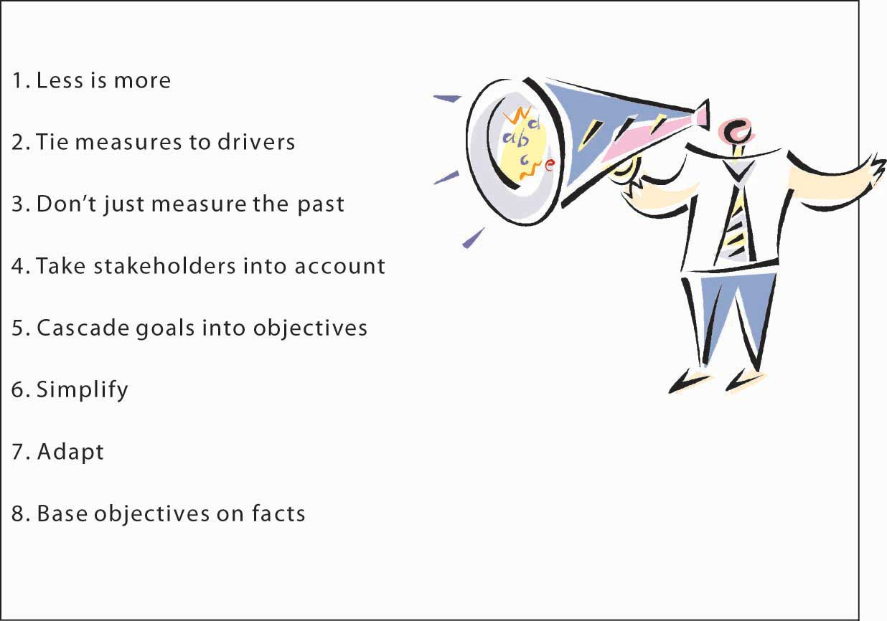

To be clear, this section does not outline which goals or objectives are appropriate or inappropriate, economically, ethically, morally, or otherwise. Instead, you will learn many of the characteristics of good goals and objectives, with the aim of becoming a better organizational goal setter (in the last section of this chapter, we remind you about SMART criteria, which is the application of many of this section’s takeaways to the development of your personal and professional goals and objectives). At the same time, you should be able to look at a set of goals and objectives and critique them effectively, such that more appropriate goals and objectives can be developed to replace them.
Figure 6.8 Characteristics of Appropriate Goals and Objectives
We tend to think that goals and objectives are easy to set, and yet, this intuition is often wrong in the organizational context. Goals and objectives are difficult to set because we might not know what they should cover or because we lay out too many of them with the hope that we are covering all the bases. Similarly, goals and objectives can proliferate in organizations because new ones are set, while old ones are not discarded. Stanford University management professor Kathleen Eisenhardt noted that there must be a certain balance to the number and type of goals and objectives: too many goals and objectives are paralyzing; too few, confusing.Eisenhardt, K., & Sull, D. (2001, January). Strategy as simple rules. Harvard Business Review, pp. 1–11. In his popular book, Keeping Score, Mark Graham Brown lists several important factors to aid managers in “rethinking” their approach to setting and managing goals and objectives, what we might call the organization’s measurement system more broadly.Brown, M. G. (1996). Keeping score. New York: Productivity Press.
Let’s walk through each of these criteria to gain a better understanding of these desirable characteristics of organizational goals and objectives. It is useful here to start by recognizing that goals, objectives, and measures are different animals. As explained at the beginning of this chapter, goals tend to be general statements, whereas objectives are specific and time bound. Measures are the indicators used to assess achievement of the objective. In some cases, a goal, an objective, and a measure can be the same thing, but more often you will set a goal, have a few objectives underlying that goal, and then one or more measures for each of the objectives.
Less is more, fewer is better, and simple rules are the common mantra here. Eisenhardt suggests that organizations should have two to seven key goals, or rules, using her vocabulary.Eisenhardt, K., & Sull, D. (2001, January). Strategy as simple rules. Harvard Business Review, pp. 1–11. Such goals guide how the firm operates, identify which opportunities to pursue, set priorities, manage timing of actions, and even inform business exit decisions.
If the organization should have only two to seven key goals, what about objectives and measures? Metric guru Graham Brown suggests that managers should not try to follow any more than 20 measures of performance in terms of performance on objectives. Thus, with two to seven goals, and 20 performance measures, this means that you will likely have a number of objectives somewhere between the number of set goals and the number of measures. Why this limit? “No individual can monitor and control more than twenty variables on a regular basis,” says Graham Brown.Brown, M. G. (1996). Keeping score. New York: Productivity Press.
One of the key litmus tests for setting goals, objectives, and measures is whether they are linked in some way to the key factors driving an organization’s success or competitive advantage. This means that they must provide a verified path to the achievement of a firm’s strategy, mission, and vision. This characteristic of effective goals, objectives, and measures is one reason that many managers use some form of Balanced Scorecard in their businesses. The Balanced Scorecard process provides a framework for evaluating the overall measurement system in terms of what strategic objectives it contributes to. The big challenge, however, is to verify and validate the link to success factors. Managers who do not scrupulously uncover the fundamental drivers of their units’ performance face several potential problems. They often end up measuring too many things, trying to fill every perceived gap in the measurement system.
For a variety of reasons it is important to capture past performance. After all, many stakeholders such as investors, owners, customers, and regulators have an interest in how the firm has lived up to it obligations. However, particularly in the area of objectives and measurement, the best systems track the past, present, and future. Echoing this observation, Robert Kaplan, co-originator of the Balanced Scorecard framework, published another book on the subject called The Balanced Scorecard: You Can’t Drive a Car Solely Relying on a Rearview Mirror. A combination of goals, objectives, and measures that provides such information is sometimes referred to as a dashboard—like the analogy that a dashboard tells you how the car is running, and through the windshield you can see where you are going. Indicators on how well the economy is doing, for instance, can suggest whether your business can experience growing or declining sales. Another leading indicator is customer satisfaction. General Electric, for instance, asks its customers whether they will refer other customers to GE. GE’s managers have found that the higher this likelihood of referral, the greater the next quarter’s sales demands. As a result, GE uses this measure to help it forecast future growth, as well as evaluate the performance of each business unit.
While it is important to track the goals and objectives most relevant to the needs of the business, relevance is subjective. This is why it is valuable to understand who the organization’s key stakeholders are, and set the goals, objectives, and measures in such a way that stakeholders can be satisfied. Or, at the very least, stakeholders can gain information relevant to their particular interests. Some stakeholders may never be entirely satisfied with companies’ performance—for example, some environmental groups may continue to criticize a company’s environmental impact, but they can be somewhat placated with more transparent reporting of what the company is doing on the environmental front. Similarly, stakeholders with social concerns will appreciate transparency in reporting on the organization’s corporate social responsibility efforts.
The less-is-more concept can apply to the way that goals cascade into objectives, which cascade into measures. Tying goals and objectives to drivers of success means that vision, mission, and strategy cascade down to goals, and so on. The first benefit of this cascade approach is that goals and objectives are consistent with the strategy, vision, and mission. A second benefit is that goals and objectives in lower levels of the organization are more likely to be vertically and horizontally consistent since they should be designed to achieve the higher-level goals and objectives and, ultimately, the overarching strategy of the organization.
Information overload is a challenge facing all managers (and students and teachers!), and simplification builds on the idea that managers can attend to a few things well but many things poorly. Simplification refers both to the use of fewer, not more, metrics, objectives and goals, and the idea that multiple measures should be distilled down into single measures like an index or a simple catch-all question. For instance, GE’s use of the single question about referring customers is a powerful but effective leading metric and a metric that it can reinforce with its rewards system. When metrics involve multiple dimensions, in areas where the organization wants to gauge customer satisfaction, for example, a survey can have 10 or more questions. Think about the many customer satisfaction surveys you are asked to complete after making an online purchase. Which question is the most important? The challenge, of course, is that a simple average of the customer survey scores, while providing a simpler indicator, also may hide some key indicator that is now buried in the average score. Therefore, the organization might need to experiment a bit with different ways of simplifying the measures with the aim of providing one that best reflects achievement of the key objective.
An organization’s circumstances and strategies tend to change over time. Since goals, objectives, and measures need to tie directly to the organization’s strategy, they should be changed as well when the strategy changes. For example, many U.S. automakers set out to dominate certain car and truck segments on the basis of vehicle features and price, not fuel efficiency. However, the recent fluctuations in oil prices gave rise to a market for more fuel-efficient vehicles. Unless the automakers set some aggressive fuel efficiency objectives for their new models, however, that is unlikely to be a differentiating feature of their cars and trucks. Adaptation of metrics is not the same as adding more or other metrics. In the spirit of fewer and simpler measures, managers should be asked to take a measure away if they plan to introduce a new one.
Finally, while goals may sometimes be general (such as performance goals in which managers simply state, grow profits 10%), the objectives and the metrics that gauge them should be quite specific and set based on facts and information, not intuition. A fact-based decision-making process starts with the compilation of relevant data about the particular goal. This in turn typically requires that the organization invest in information and in information-gathering capabilities.
For example, early in Jack Welch’s tenure as CEO of GE, he set out a financial goal for the company of improving its return on assets (ROA), a measure of financial efficiency. One of the underlying determinants of ROA is inventory-turn, that is, how many times a firm can sell its stock of inventory in a given year. So, to improve ROA, a firm will likely have to also improve its inventory turns. One of GE’s divisions manufactured refrigerators and turned its inventory seven times per year. What objective should Welch set for the refrigerator division’s inventory turn? Instead of simply guessing, Welch sent a team of managers into another manufacturing firm (with permission of the firm’s owners and top managers) in a different industry and learned that it was achieving turns of 12 to 17 times per year! Armed with this information, Welch could then set a clear and fact-based inventory-turn objective for that division, which in turn supported one of the overarching financial goals he had set for GE.
Figure 6.9 Steve Jobs Announcing Apple’s Release of the iPhone
Fact-based objectives typically can be clearer and more precise the shorter the relative time to their achievement. For instance, a firm can likely predict next week’s sales better than next year’s sales. This means that goals and objectives for the future will likely need to be more specific when they are fairly current but will necessarily be less precise down the road.
The main challenge with fact-based objectives is that many firms find future opportunities in markets where there is not an existing set of customers today. For instance, before Apple released the iPhone, how big would you expect that market to be? There certainly were no facts, aside from general demographics and the technology, to set fact-based goals and objectives. In such cases, firms will need to conduct “experiments” where they learn about production and market characteristics, such that the first goals and objectives will be related to learning and growth, with more specific fact-based objectives to follow. Otherwise, firms will only take action in areas where there are data and facts, which clearly creates a paradox for managers if the future is uncertain in their particular industry.
This section described eight general characteristics of good goals, objectives, and measures. Fewer and simpler goals and objectives are better than more and complex ones. Similarly, goals and objectives should be tied to strategy and, ultimately, to vision and mission, in a cascading pattern so that objectives and measures support the goals they are aiming to help achieve. Goals and objectives must also change with the times and, wherever possible, be anchored in facts or fact-finding and learning.